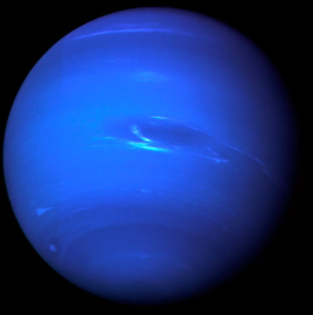

Neptuno es el más alejado del Sol y esto lo convierte en el planeta más frío del Sistema Solar: Tambien, por el gas existente en su atmósfera, se ve de color azul. Posee un sistema de cuatro anillos formados por particulas de polvo.
Su nombre es en honor a Neptuno, dios romano de las aguas.
